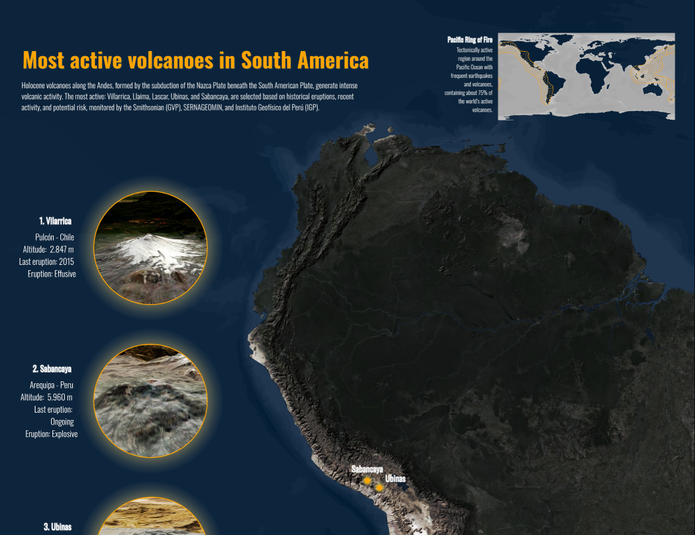

GIS Projects

Unidades Fitogeográficas do Paraná
Distribuição das formações vegetais do Paraná com foco em hierarquia cartográfica.
View Project
Complexo de Montanhas da Serra do Mar Paranaense
Representação cartográfica destacando padrões topográficos regionais.
View Project

Most Active Volcanoes in South America
Thematic cartographic representation of active volcanic systems.
View Project